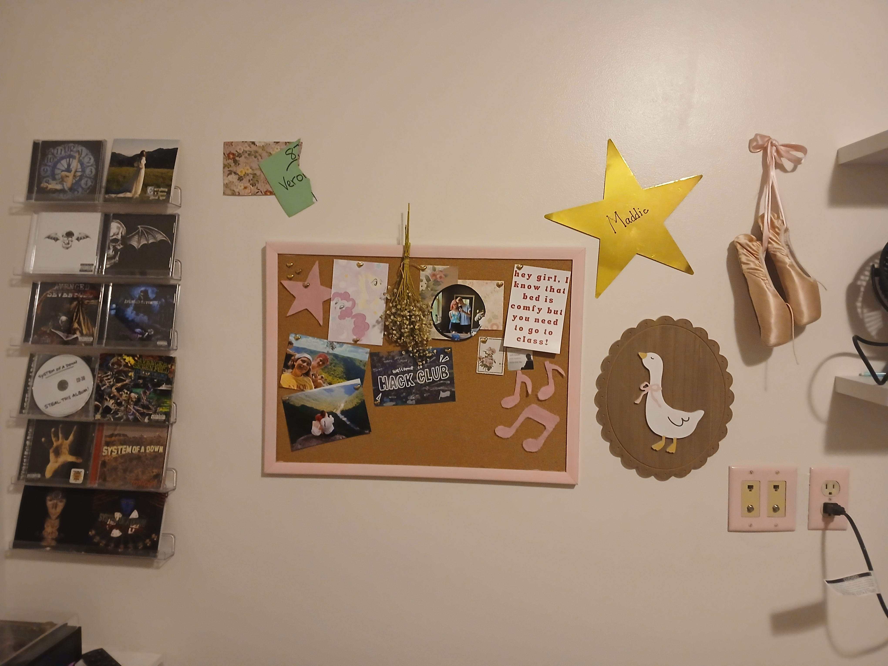
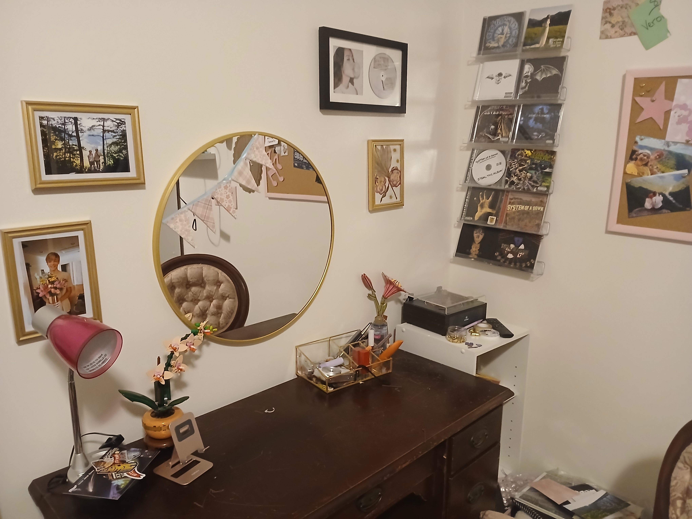

Like most things I do, I usually make them all pink.
This idea also applies to my room!
My room is like my safe space.
I've decorated it so I can surround myself with things I enjoy
(which means a LOT of pink ;D).
This site features antique pink patterns like my chair, that isn't well pictured,
accents of pink like my outlets, flowers like ones on my desk, and gold frames like the ones I hang on my walls.
A lot of person sites are portfolios. Mine could technically be one,
but instead of just showing off my (totally) AWESOME tech skills, I wanted to give users a look into my room!
Enjoy your stay :D
